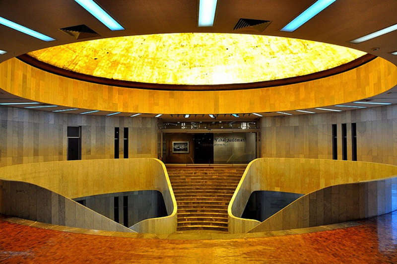
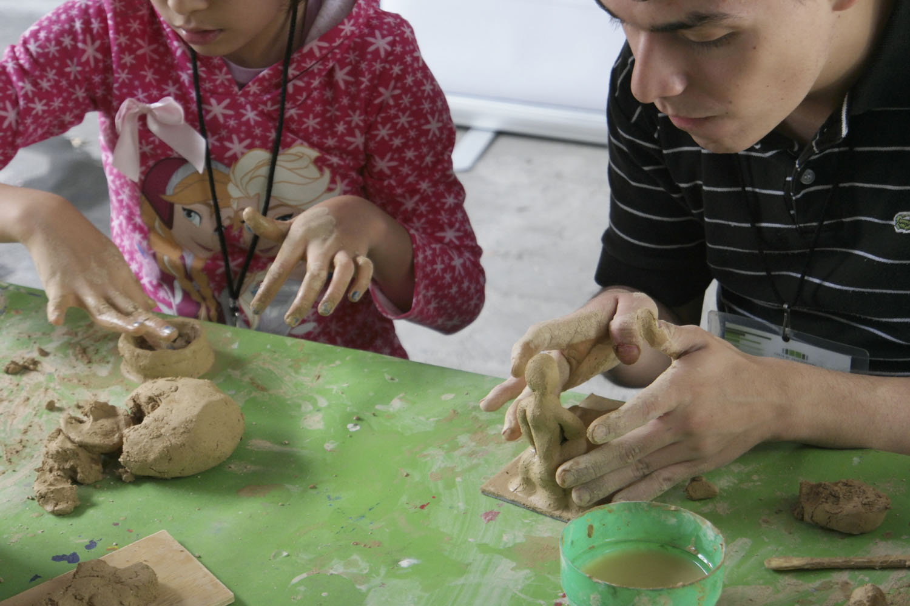

El departamento tiene como misión, brindar a los diferentes públicos experiencias
significativas con la colección del Museo de Arte Moderno y sus exposiciones temporales,
a través de programas educativos y académicos que fortalezcan a la institución como un
espacio vivo, favorable para el auto conocimiento, el diálogo, el disfrute y el aprendizaje.

TALLERES, CURSOS Y ACTIVIDADES ACADÉMICAS
El Museo de Arte Moderno propone diversas
actividades paralelas en torno a las exposiciones temporales y su colección
permanente. En el calendario podrás encontrar talleres para todas las edades:
niños, jóvenes y adultos, actividades familiares los fines de semana; cursos
especiales para públicos específicos y actividades académicas como coloquios,
simposios, conferencias y presentaciones de libros. Las actividades son abiertas
a todo público.

VISITAS GUIADAS
Las visitas mediadas buscan fomentar una
experiencia significativa con el arte. A partir de la reflexión y la observación
se invita al público a ser partícipe de los procesos artísticos. Disfruta del arte
con nuestros diferentes tipos de vistas diseñadas especialmente para ti, tanto en las
exposiciones temporales como en el Jardín Escultórico.

VISITAS INSTITUCIONALES, A PÚBLICO EN GENERAL Y GRUPOS ESPECIALES.
Con el fin de fortalecer nuestros lazos y alianzas
interinstitucionales, se ofrecen visitas guiadas a otros grupos, como museos, centros de
cultura y organismos públicos.

SERVICIO SOCIAL Y PRÁCTICAS PROFESIONALES
El Museo de Arte Modernos promueve el desarrollo integral
de nuestros jóvenes universitarios impulsando la participación activa en las distintas actividades
y el servicio que el espacio ofrece en sus áreas de diseño, diseño web, curaduría, educación, difusión,
colecciones y biblioteca.